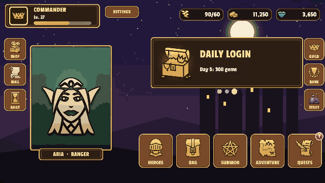

화면 전환
KeyTween에는 게임 UI의 화면 흐름을 관리하는 컴포넌트가 들어 있습니다. 화면을 쌓고 뒤로 가는 페이지, 위에 띄우는 팝업(모달), 탭처럼 바꿔 보여 주는 시트를 다룹니다. UnityScreenNavigator와 같은 역할을 별도 패키지 없이 할 수 있습니다.
전환 연출은 화면 Prefab에 붙은 KeyTween 상태로 만듭니다. 상태는 KeyTween 컴포넌트에 이름을 붙여 저장해 둔 애니메이션 하나를 말합니다. 정해진 이름의 상태가 없으면 기본 전환을 씁니다.
모든 전환은 Unity Awaitable을 돌려주므로, 서드파티 라이브러리 없이 await로 끝날 때까지 기다릴 수 있습니다.
1. 화면 — KeyTweenScreen
KeyTweenScreen은 페이지, 모달, 시트가 되는 화면 하나를 나타냅니다.
화면 Prefab 만들기
- 화면 Prefab의 루트를 고릅니다.
- Add Component > KeyTween > Screen을 선택합니다.
같은 오브젝트에 다음 컴포넌트가 함께 있어야 합니다.
RectTransformCanvasGroupKeyTween
컨테이너가 만든 화면은 컨테이너 영역을 꽉 채웁니다.
그리는 순서 — renderingOrder
- 페이지 컨테이너에서는 값이 높은 페이지가 위에 그려집니다.
- 값이 같으면 넣은 순서대로 쌓입니다.
- 모달 컨테이너에서는 나중에 띄운 모달이, 시트 컨테이너에서는 마지막으로
Show한 시트가 위에 옵니다.
연출 없이 전환하기
animated: false로 전환하면 연출 없이 상태의 끝 모습으로 바로 바뀝니다.
게임을 시작하거나 저장된 화면을 복원할 때처럼, 사용자가 전환을 볼 필요가 없을 때 씁니다.
await pages.Push(homePrefab, animated: false); // 첫 화면은 슬라이드 없이 바로
이때는 상태를 재생하지 않고 끝 모습만 쓰므로, 전환 상태의 On Start와 On Complete가 불리지 않습니다. 생명주기 메서드(WillEnter, DidEnter 등)는 그대로 불립니다.
전환 상태의 콜백
전환은 상태를 PlayAsync로 재생합니다. 그래서 전환 상태의 On Start와 On Complete가 불립니다.
전환 상태가 끝까지 가지 못하면(그 상태의 On Start에서 Stop을 부르거나, 다른 상태가 같은 속성을 가져가는 경우) Push, Pop, Show가 OperationCanceledException을 던집니다. 이때 화면은 중간 모습으로 남고 생명주기의 Did...는 불리지 않습니다. 전환 상태는 전환 중에 멈추지 마세요.
2. 컨테이너
화면은 컨테이너가 만들고 관리합니다. 컨테이너는 세 종류가 있고, 종류마다 화면에서 찾는 상태 이름과 기본 전환이 다릅니다.
| 컨테이너 | 화면 | 기본 전환 (0.3초) |
|---|---|---|
KeyTweenPageContainer |
쌓고 뒤로 가는 페이지 | 화면 한 폭만큼 슬라이드(Size Relative), OutQuart |
KeyTweenModalContainer |
위에 띄우는 모달 | 크기 0.3 → 1과 알파(OutQuart), 배경은 알파 페이드(Linear) |
KeyTweenSheetContainer |
바꿔 보여 주는 시트 | 알파 페이드(Linear) |
컨테이너 추가하기
- Canvas 안에 화면이 들어갈 영역이 될 오브젝트를 만듭니다. 보통 Canvas를 꽉 채우는 RectTransform입니다.
- Add Component > KeyTween > Page Container(또는 Modal Container, Sheet Container)를 선택합니다.
CanvasGroup이 함께 붙습니다. - 코드에서 이 컨테이너에 화면 Prefab을 넘겨 엽니다.
[SerializeField] KeyTweenPageContainer pages;
[SerializeField] KeyTweenScreen shopPrefab;
public async void OpenShop() => await pages.Push(shopPrefab);
컨테이너가 화면을 만들 때 컨테이너 영역을 꽉 채우도록 맞춥니다. 페이지와 모달을 함께 쓰려면 컨테이너를 둘 만들고, 모달 컨테이너를 Hierarchy에서 아래(위에 그려지는 쪽)에 둡니다.
페이지 — KeyTweenPageContainer
- API:
Push(prefab, animated, stack),Pop(animated),Pages,Current - 상태 이름:
PushEnter,PushExit,PopEnter,PopExit
await pages.Push(loadingPage, stack: false); // 로딩 화면: 다음 페이지가 들어오면 기록에서 빠지고 파괴됨
await pages.Push(homePage); // Home이 WillEnter에서 준비하는 동안 로딩 화면이 보임
Push는 다음 순서로 진행합니다.
- 새 페이지를 만듭니다.
- 들어오는 페이지와 나가는 페이지의
Will*메서드가 끝나기를 기다립니다. PushEnter와PushExit를 동시에 재생합니다.- 끝나면 나간 페이지를 비활성화합니다.
stack: false로 넣은 페이지는 다음 페이지가 들어올 때 기록에서 빠지고 파괴됩니다. 로딩 화면에 씁니다.Pop은 이전 페이지를 다시 활성화하고PopEnter와PopExit를 재생한 뒤 현재 페이지를 파괴합니다.- 페이지가 없으면
Pop은 아무것도 하지 않습니다.
RPG 샘플은 로비에서 영웅 상세 페이지로, 상세 페이지에서 강화 페이지로 이동할 때 Push를 쓰고, 돌아올 때 Pop을 씁니다.

모달 — KeyTweenModalContainer
- API:
Push(prefab, animated),Pop(animated),Modals,Current,backdropPrefab - 상태 이름:
Enter,Exit(배경도Enter/Exit)
await modals.Push(confirmPopup);
await modals.Pop();
- 모달마다 배경(backdrop)을 하나씩 만듭니다.
backdropPrefab을 비워 두면 75% 불투명도의 검정 배경을 만듭니다.- 아래에 깔린 모달은 움직이지 않고, 생명주기 메서드도 불리지 않습니다.
Pop은Exit를 재생한 뒤 모달과 배경을 파괴합니다.
RPG 샘플의 출석 체크 창은 모달 컨테이너로 띄웁니다. 창이 나타나는 동안 뒤의 로비는 배경으로 어두워집니다.

시트 — KeyTweenSheetContainer
- API:
Register(prefab),Show(index, animated),Sheets,ActiveIndex,Active - 상태 이름:
Enter,Exit - 낮은 번호로 갈 때의 상태 이름:
EnterBackward,ExitBackward(없으면Enter/Exit)
var tab = sheets.Register(shopTabPrefab);
await sheets.Show(tab); // 높은 번호로 가면 Enter, 낮은 번호로 가면 EnterBackward
Register는 시트를 만들어 숨겨 두고, 그 시트의 번호를 돌려줍니다.Show는 현재와 같은 번호이거나 범위를 벗어난 번호를 받으면 아무것도 하지 않습니다.- 나간 시트는 비활성화됩니다.
기본 전환 값
기본 전환 값은 UnityScreenNavigator의 기본값과 같습니다. 코드에서 KeyTweenDefaultTransitions를 통해 직접 쓸 수도 있습니다.
PagePushEnter등SlideFadeIn/FadeOut
모두 KeyTweenScreen을 받아 새 KeyTweenState를 돌려주는 함수입니다. 이름을 붙여 AddState로 넣으면 다른 상태처럼 재생할 수 있습니다.
var fade = KeyTweenDefaultTransitions.FadeIn(screen);
fade.name = "FadeIn";
screen.Animation.AddState(fade);
3. 입력 막기
전환이 진행되는 동안에는 모든 컨테이너의 터치 입력이 막힙니다. 그래서 버튼을 연달아 눌러도 전환이 겹치지 않습니다.
전환 중인지 확인하기
KeyTweenScreenContainer.AnyInTransition: 어느 컨테이너든 전환 중인지 알려 줍니다.IsInTransition: 컨테이너별로 전환 중인지 알려 줍니다.
입력을 막는 방식
입력은 각 컨테이너의 CanvasGroup.blocksRaycasts로 막습니다.
interactable은 바꾸지 않으므로, 전환 중에도 버튼이 비활성 색으로 바뀌지 않습니다.- 컨테이너 오브젝트에는
RectTransform과CanvasGroup이 있어야 합니다.
4. 생명주기 — IKeyTweenScreenLifecycle
화면이 들어오고 나갈 때 코드를 실행하려면 이 인터페이스를 씁니다.
생명주기 메서드 구현하기
화면 루트에 있는 컴포넌트 중 이 인터페이스를 구현한 것이 있으면 전환 때마다 불립니다. 모든 메서드에 기본 구현이 있으므로 필요한 메서드만 작성하면 됩니다.
public sealed class HomePage : MonoBehaviour, IKeyTweenScreenLifecycle
{
public async Awaitable WillEnter(KeyTweenTransition t) { await LoadAsync(); } // 애니메이션 전에 불리고, 끝날 때까지 기다림
public void DidEnter(KeyTweenTransition t) { } // 애니메이션 후
public Awaitable WillExit(KeyTweenTransition t) => KeyTweenScreen.Completed(); // 기다릴 작업이 없을 때
public void DidExit(KeyTweenTransition t) { }
}
전환 정보 — KeyTweenTransition
각 메서드가 받는 KeyTweenTransition에는 다음 정보가 들어 있습니다.
| 속성 | 내용 |
|---|---|
Kind |
전환 종류. Push, Pop, Show, Hide 중 하나 |
Partner |
함께 전환되는 상대 화면 |
Backward |
뒤로 가는 전환인지 여부 |
Animated |
연출을 재생하는 전환인지 여부 |
Backward가 true인 전환은 다음과 같습니다.
- 페이지와 모달의 Pop
- 시트에서 낮은 번호로 가는 전환
5. 공유 요소 전환 — KeyTweenSharedElement
공유 요소 전환은 한 요소가 두 화면을 잇는 연출입니다. 예를 들어 목록에 있던 초상화가 상세 화면의 초상화 자리로 이어지며 커집니다.
공유 요소 전환 만들기
연출 자체는 에디터에서 만들고, 실행 중에만 알 수 있는 상대 화면 쪽 자리는 코드에서 채웁니다.
- 움직이는 이미지에 Position 트랙과 Size 트랙을 두고 키를 넣습니다.
Will*메서드에서 상대 화면 쪽 자리에 해당하는 키(첫 키 또는 마지막 키)만 채웁니다.
// RPG 샘플 RpgHeroDetail: 영웅 카드의 초상화(card)가 상세 화면의 초상화(portrait) 자리로 이어짐
public Awaitable WillEnter(KeyTweenTransition t)
{
KeyTweenSharedElement.SetPartnerKeys(GetComponent<KeyTween>(), "PushEnter", portrait.rectTransform, card, atStart: true);
card.GetComponent<Image>().enabled = false; // 카드 쪽 그림은 숨겨 두고, 상세 화면에서 돌아온 뒤 다시 보이게 함
return KeyTweenScreen.Completed();
}
public Awaitable WillExit(KeyTweenTransition t)
{
if (t.Kind == KeyTweenTransitionKind.Pop) // 돌아갈 때: 마지막 키를 카드 자리로
KeyTweenSharedElement.SetPartnerKeys(GetComponent<KeyTween>(), "PopExit", portrait.rectTransform, card, atStart: false);
return KeyTweenScreen.Completed();
}
SetPartnerKeys
SetPartnerKeys(animation, state, moving, partner, atStart)는 partner가 화면에서 차지하는 사각형을 moving 기준의 위치와 크기로 바꿉니다.
- 그 값을 Position 트랙과 Size 트랙의 키에 씁니다.
atStart가 true이면 첫 키에, false이면 마지막 키에 씁니다.moving의 앵커는 한 점이어야 합니다(stretch가 아니어야 합니다).
사용 예
- RPG 샘플의 영웅 카드에서 상세 화면으로의 전환
- 가방 슬롯에서 아이템 정보 팝업으로의 전환
- ScreenNavigator 재현 샘플의 초상화 뷰어
RPG 샘플의 가방에서는 슬롯을 누르면 아이템 아이콘이 아이템 정보 팝업의 자리로 이어집니다.
